|  |
| |
illustration © Milo
Zine Reviews:
Information on drug related zines donated by the Zine Directory, PO Box 1361, Tustin, CA 92681. A copy of the Zine Directory, updated sporadically, costs $2.00.
Chose “Zine reviews” from the “Other Menu” to read the zine reviews.
The story of Kaya Indica:
The heart-warming story of one woman’s brave struggle against the medical community. Reprinted from the Orange County Hemp Journal.
Chose “Kaya Indica” from the “Other Menu” in the Macintosh Custom Reader to read this story.
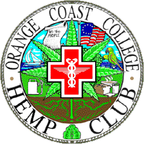
illustration © Michael M
By Lee Wilson, president of the Orange Coast College Hemp Club and co-proponent of the California Cannabis Hemp and Health Initiative 96.
Ask student government for teachers that might sponsor a new club on your campus.
Teachers that are good to ask: history, social science, political science, business, economics, natural science.
When asked about your stance on recreational smoking, say “We don’t condone any illegal acts.”
Many instructors are hesitant to sponsor a hemp group, thinking it will be a “smoking club”. Say “This isn’t about recreational smoking, this is about using hemp, the best sustainable natural resource for paper, food, fiber, fuel, and medicine. Sick people are dying without dignity, the last of our forests are being cut down. Would you sponsor our hemp club so that we may have a voice for our opinion?”
1. Hemp rally (the sooner the better).
2. Participation in local Earth Day celebration.
3. Introduce a medical marijuana resolution to your county board of supervisors (example follows).
4. Bird feeders (article follows).
5. Hempseed pancake breakfast.
6. Celebrate George Washington’s birthday with “George Grew Hemp Day”.
7. Set up information booths at special events: concerts, other colleges, parades, etc.
Remember, by being out in public you will get the media’s attention.
You will find a copy of the Orange Coast College Hemp Club emblem (art work by Michael M) in the Hemp Club folder in the Pictures folder on this CD. There is a version with a blank spot for filling in your own club’s name.
Example of a campus activity, as reported in the campus newspaper (the OCC Coast Report) on Wednesday, November 1, 1995 (reprinted with the writer’s permission):
By Lynda Dominic
Campus birds are gorging themselves on hemp seeds, with the approval of the Associated Students of Orange Coast College.
ASOCC approved the proposal by the Hemp Club to stock the campus with birdfeeders filled with hemp seeds. The birdfeeders were distributed on the campus last Tuesday.
Hemp seed is the most nutritious bird food available. It contains all the amino acids and essential fatty acids required to sustain life. Hemp seed also provides complete protein in an easily digestible form.
Lee Wilson, president of the Hemp Club, says that some campus clubs oppose the use of the birdfeeders and oppose the Hemp Club. Wilson says that at least 75 percent of the club’s banners have been stolen or defaced this semester.
Terry Craig, head of Maintenance and Operations, says that no incidents of vandalism to the birdfeeders have been reported.
Trustee Scott McCarthy said, “Through our research prior to voting we know the seeds are treated so that they can’t produce plants. They’re very nutritious for the birds.”
The hemp seed used in bird food is sterile and contains no tetrahydrocannabinol (THC), the principal chemical intoxicant found in marijuana. Hemp seed is imported into the United States because U.S. law prohibits growing hemp, even sterile hemp.
Birdfeeders are commonly stocked with hemp seeds because birds prefer them. They will select and eat them first from a pile of mixed seeds, according to congressional testimony. Bird food companies told congress that song birds will not sing without a diet of hemp seed.
Bird food is the last remaining legal use of hemp in this country. Hemp is commonly harvested in other countries, such as Italy, to make rope, fiber, paper and oils.
The United States has only recently banned the use of hemp. Mandatory hemp-growing laws were common during colonial times. Hemp was used as legal tender (money) form 1631 until the 1800s.
The Hemp Club meets every Monday at 12:30 p.m. on the grass in front of the bookstore. “Everybody is welcome to come by and see what it’s all about,” Wilson said.
Example of a campus activity, as reported in the campus newspaper (the OCC Coast Report) on Wednesday, November 8, 1995 (reprinted with the writer’s permission):
By Lynda Marie Dominic
Re-legalization of hemp was the battle cry of a Hemp Club demonstration Saturday afternoon.
The demonstration, held in front of the Orange County Hemp Headquarters in Huntington Beach, was co-sponsored by Orange Coast College’s Hemp Club. About 30 demonstrators waved picket signs that read “America! Re-legalize hemp” and “Germany and Canada have re-legalized hemp!” from 1:30 to 4:30 Saturday afternoon.
The demonstration attracted attention on crowded Beach Boulevard, as pedestrians and passing cars honked and waved. Hemp Club president Lee Wilson called the protest a success.
Wilson says one of the Hemp Club’s goals is to educate people about the many uses of hemp, which was legal in this country until the early part of this century.
Hemp can be used in place of cotton and wood to make many products cheaply, such as cordage (rope), cloth, sturdy rag paper, particle board, plywood, and sails for ships.
Hemp seed has many nutritive properties, and is second only to soybeans in protein content. Hemp seed also contains all essential fatty acids necessary for life.
Hemp seeds are currently used in campus bird feeders, as they are the most nutritious form of bird food.
Hemp oil can be used to lubricate engines and, according to Hemp Club literature, can be used in place of fossil fuels. The literature also states that re-legalization of hemp would positively impact the environment in other ways.
Using hemp to make certain kinds of wood and paper instead of trees would help save our forests from destruction.
Medicinal marijuana use is the subject of the next Hemp Club protest, scheduled for Nov. 27 in the OCC quad. The protest will be a reaction to Governor Pete Wilson’s veto of the medicinal marijuana bill.
The bill would have allowed doctors to prescribe marijuana in certain specific situations, for example, for glaucoma sufferers or chemotherapy patients.
The Hemp Club meets at 12:20 p.m. every Monday and at 2:00 p.m. every Tuesday on the grass in front of the bookstore.
For more information, attend a Hemp Club meeting.
Please add my name to the list of Orange County residents who publicly support the Orange County resolution calling for the reclassification of cannabis. This reevalutation of the Controlled Substance Act would return cannabis as a Schedule II drug, hereby allowing physicians to prescribe it to patients in need.
This resolution does 5 things:
1. Calls for an open discussion of the facts.
2. Urges elected representatives to listen to the will of the people.
3. Urges law enforcement to stop putting sick people in jail.
4. Allows physicians to make medical decisions, not the politician.
5. Requires the County Board of Supervisors to send a message to the state and federal government asking them to end the prohibition against cannabis as medicine.
We believe this to be an issue of compassion and basic human rights of the individual and physician to prescribe whatever medicine works best for them. With cannabis as one of the safest therapeutically active substance known to man, I urge the Board of Supervisors to adopt this resolution.
Sincerely,
a concerned voter
Resolution to support federal review and modification of the Compassionate Investigational New Drug Program and review of the scheduling of cannabis (marijuana) under the Controlled Substance Act.
The following resolution is hereby offered and read:
Whereas, the Board of Supervisors of Orange County does not condone the illegal use of any substance, regardless of the intended purpose or effect of that use; and
Whereas, significant scientific and medical studies by the California Academy of Family Physicians and the National Academy of Sciences, have shown that marijuana is safe for use under medical supervision and that the cannabis plant, in its natural form, has important therapeutic actions that are often of critical importance to persons afflicted with a variety of life threatening illness; and
Whereas courts have recognized the medical value in cannabis in treatment and have ruled that cannabis can be a drug of “necessity” in the treatment of glaucoma, cancer, AIDS, and multiple sclerosis; and
Whereas, the people of the County of Orange believe that well trained medical professionals rather than remote federal bureaucrats should be responsible for determining a patient’s routine of medical care; and
Whereas, Senate Joint Resolution No. 8, passed by both houses of the State of California legislature, requests that the Federal Government enact legislation to permit the prescription of cannabis/marijuana by a licensed physician; and
Whereas, the United Nations Narcotic Board voted overwhelmingly to reclassify cannabis as a schedule II drug available for prescription.
Now, therefore, be it resolved, that the Orange County Board of Supervisors, State of California, does hereby request that the Federal Government reconsider the scheduling of this drug, specifically, its reclassification from Schedule I to Schedule II and restore the limited availability of this drug through the Compassionate Investigation New Drug Program.
Further, that within thirty (30) days of the adoption of this resolution, the Board of Supervisors shall transmit the text of this resolution to the President of the United States, the Governor of the State of California, and the Federal and State Legislative Representatives of the County of Orange, and urge them to take whatever steps are within their power, to conform existing legislation to these purposes.
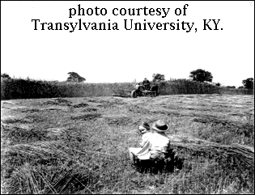
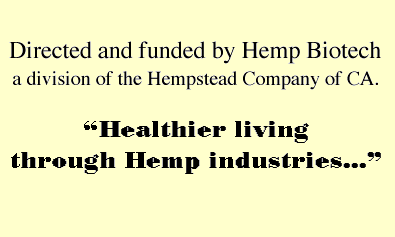
Research of True Hemp (Cannabis Sativa L.) for Agronomic crop feasibility in California
The physical growth of True Hemp (cannabis sativa L.) with combined effects of, above average atmosphere below sea level and soil temperature, conducted at the Irrigated Desert Research Station at Brawley, California by Hemp-Biotech, a division of the Hempstead Company of Costa Mesa, California, Lead Project Coordinator, Christopher J. Boucher, Field Technician, David T. Martyn Jr., Edited by Stephen H. Saunders.
This is the first corporate sponsored industrial hemp research project since 1957. Since hemp is defined in the USDA (Farmer’s Bulletin 1935) as a strategic crop. According to the state of California however, the legality of True Hemp is in question since Hemp (Cannabis Sativa L.) is not recognized as a legal or viable crop for research or economic enhancement for California’s rural communities.
The mission of this project was to increase the long term viability and competitiveness of food and fiber production and expand economic opportunities in rural America and enhance the quality of life for farmers, rural citizens, and society as a whole. Further, to develop information and systems to enhance the environment and the material resource base upon which a sustainable agricultural economy depends, and at a time when the attrition rate of farm-based industry is at an all-time high.
We believe it is of utmost importance for the public to know the true agronomical statistics and facts about True hemp (cannabis sativa L.).
After five months of research, the State of California stepped in and destroyed the fields of hemp, interrupting this historical agricultural project on July 29th of 1994.
Included here is the growing and testing data from this project. It is our intention to complete this report with a harvested and processed crop, and without interruptions, at a future date.
March 12, 1994 through July 25, 1994
Physical field and procedural data
The data was compiled from growth reports on stem length and width, analytical contents of cellulose and hemi-cellulose weights, lignin contents, and pectin concentrates. Seed oil proteins were weighed and tested. Secondary fiber and inner core weights were measured and total plant weights were tested and weighed (roots were removed at the base of the stem).
All procedures were conducted according to “FORAGE Fiber ANALYSES”, U.S.D.A., jacket 387-598; HANDBOOK NO. 379.
Four varieties were planted. The soil was Imperial silty clay loam. The acreage was divided into five (5) plots and two (2) flat beds. The soil was disked three (3) times and floated. There were three (3) rows per bed, space 1' between rows. #6 Kenaf.
Table 1. Topography of hemp plots
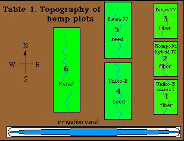
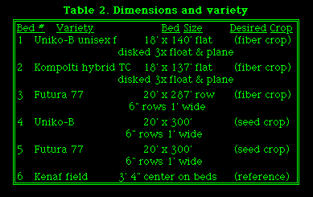
Table 2. Dimensions and variety
Bed # Variety Bed Size Desired crop
1 Uniko-B unisex f 18' x 140' flat; disked 3x float & plane (fiber crop)
2 Kompolti hybrid TC 18' x 137' flat; disked 3x float & pane (fiber crop)
3 Futura 77 20'x287' row 6" rows 1' wide (fiber crop)
4 Uniko-B 20' x 300' 6" rows 1' wide (seed crop)
5 Futura 77 20' x 300' 6" rows 1' wide (seed crop)
6 Kenaf field 3' 4" center on beds
Table 3. Data Comparisons from Existing Hemp Studies
Indicated in report of a visit to the Federation Nationale Des Prodecteurs de Chanvre at Le Mans, France.
Soil test should include pH. not below 5.
A crop yielding 8 t/ha of stems (at 16% humidity) will contain 65 to 80 kg of N, 20 kg of p2O5, and 120 kg of k2o. Recommend fertilizer gifts (depending on fertility status of the soil are: 100 to 140 kg of N/ha, 80 to 120 kg of p2o5/ha, and 160 to 200 kg of k2o/ha. Too much N may cause lodging. Same study as above. Properties of the distinguished stem fractions are important for potential industrial applications.
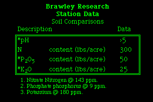
Soil Comparisons
Description Data
*ph >5
N content (lbs/acre) 300
*P2O5 content (lbs/acre) 50
*K2O content (lbs/acre) 25
1. Nitrate Nitrogen @ 143 ppm.
2. Phosphate phosphorus @ 9 ppm.
3. Potassium @ 180 ppm.
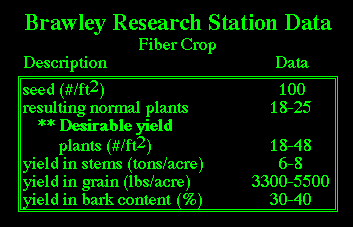
Fiber Crop
Description Data
seeds (#/ft2) 100
resulting normal plants 18-25
** desirable yield plants (#/ft2) 18-48
yield in stems (tons/acre) 6-8
yield in grain (lbs/acre) 3300-5500
yield in bark content (%) 30-40
Seed Crop
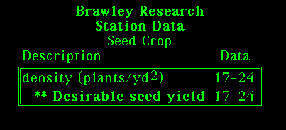
density (plants/yd2) 17-24
** desirable seed yield
As received from overseas, ECC approved seeds. These are some of our seed measurements & weights:
1) Uniko-B unisex female seed variety 3.72 gms./200 seeds or 118k seeds/lb.
2) Kompolti Hybrid TC variety 4.34 gms./200 seeds or 101k seeds/lb.
3) Fedrina Futura 77 seed variety 3.32 gms./200 seeds or 133k seeds/lb.
Futura 77 is a monecious French fiber cultivar cultivated mainly for paper pulp production.
Kompolti & Uniko-B Hungarian are mainly for fiber cultivation. They are dioecious species.
Growth and condition of the hemp using cv Kompolti Hybrids, Unico TC. Cultivars, and Futura 77, all of which are of Northern Latitude descent adapted extremely well. Showing subtlety for hot desert climates, plus soil temperatures, plus carbon dioxide levels, along with weekly watering, using gravity flow.
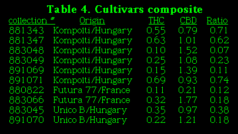
collection # Origin THC CBD Ratio
881343 Kompolti/Hungary 0.55 0.79 0.71
881347 Kompolti/Hungary 0.63 1.01 0.62
883048 Kompolti/Hungary 0.10 1.52 0.07
883049 Kompolti/Hungary 0.25 1.08 0.23
891069 Kompolti/Hungary 0.15 1.39 0.11
891071 Kompolti/Hungary 0.69 0.93 0.74
880822 Futura 77/France 0.11 0.21 0.12
883066 Futura 77/France 0.32 1.77 0.18
883045 Unico B/Hungary 0.35 0.97 0.38
891070 Unico B/Hungary 0.22 1.21 0.18
Hybrid 883154 x 883049
Results of character of Cannabis accessions study indicate fiber maturity and THC content are semi-interrelated. There are obvious relation of chemical characteristics with agronomic characteristics such as plant fiber lengths and market values.
As for the potential of industrial hemp agriculture in America, the THC has been a major limiting factor. Through various agro biotech methods we have been able to lower the THC values. In fact, Industry has lowered THC content below 0.3% and raised CBD (cannabidiol) content. CBD is the antagonist to THC. Like THC, CBD can biologically lock onto anandamine receptor sites in brain cells. If our hybrid plants are used by humans for other than industrial purposes. receptor sites in the brain become filled with CBD not allowing the THC to dock on brain cells. Thus, creating a very low THC content and increasing the CBD content makes the hybrid plants non psychedelic cannabis sativa. (Interview with Dr. Raphael Mechoulam, discoverer of the THC molecule; Journal of the International Hemp Assoc. VOL I #1.) This is the rule of thumb for all EC countries that grow “true hemp”, cannabis sativa, including but not limited to the United Kingdom, France, Spain, and Hungary.
Step 1 Would require samples taken from the top 5-6 inches of plants cross-vertically over a 20' x 20' section.
Step 2 The cut tops should be dried in cotton or paper bags @ 35c for 5-7 days in the dark. This gives the most accurate THC analysis. Storage for 6 weeks was recorded.
Step 3 Grind leaf material in centrifugal mill over 0.2 mm sieve this will help extract the cannabinoids.
Step 4 Put 100 mg of leaf powder into 2.5 ml of hexane in a glass culture tube. The tube contains 0.2 mg/ml of squalance as an internal standard.
Step 5 Place suspended in an ultrasonic bath and centrifuge for 18 to 22 min.
Step 6 The hexane layer will decante and extract the pellet.
Step 7 Repeat step 6 one more time with 5 ml of hexane.
Step 8 Put combined decanted extracts without devrivation 1 l inject into a gas chromatograph .
Test should be done on a Varian 3700 gas chromatograph with auto sampler 8000 equipped with a split less injector a flame ionisation detector and a fused silica column (25 mm x 0.25 mm) coated with CP Sil 5 CB.
Step 9 Carrier of gas helium flow rate 0.8 ml/min; split 25 ml/ml.
This is the procedure the USDA and local farming communities will need to carry out as an ongoing process of monitoring chemical levels in crop production.
Rates are 48 seeds drilled per square foot and thus 18 to 48 plants per square foot should be expected. We believe that physical plant density measurements on this date fall within the expected parameters for the physical planting density. More accurate measurement will follow on subsequent field trips where a measured yard of field will be counted in a multitude of spots to determine a more accurate plant density and a standard deviation in the measurement. A modified corn drill was used.
Field 1 Uniko-B appears not to be a monecious variety as expected. 0% herbicide & pesticide usage.
Field 2 Kompolti TC appears not to be a monecious variety. 0% herbicide & pesticide usage.
Field 3 Futura 77 appears not to be a monecious variety. Has shortness in stem. Seed plants approximately 500 seeds per plant mostly over grown with weeds (Lambsquarter). 0% herbicide & pesticide usage.
Field 4 Uniko-B (seed crop) female; Approximately 1000 seeds per plant result when row planted. 0% herbicide & pesticide usage.
Field 5 Futura 77 appears to be a monecious variety. Has shortness in stem. Seed plants approximately 500 seeds per plant. 0% herbicide & pesticide usage.
Field 6 Kenaf field.
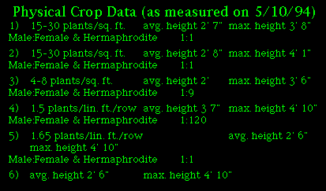
1) 15-30 plants/sq. ft. avg. height 2' 7" max. height 3' 8"
Male:Female & Hermaphrodite 1:1
2) 15-30 plants/sq. ft. avg. height 2' 8" max. height 4' 1"
Male:Female & Hermaphrodite 1:1
3) 4-8 plants/sq. ft. avg. height 2' max. height 3' 6"
Male:Female & Hermaphrodite 1:9
4) 1.5 plants/lin. ft./row avg. height 3 7" max. height 4' 10"
Male:Female & Hermaphrodite 1:120
5) 1.65 plants/lin. ft./row avg. height 2' 6" max. height 4' 10"
Male:Female & Hermaphrodite 1:1
6) avg. height 2' 6" max. height 4' 10"
Note: Irrigation on this date caused difficulty in measurement of crop density (number of plants/unit area) in fields 1, 2, & 3 and thus resulted in large variations of this density data. It is our belief, however, that these measurements correlate with the planting density of 16 holes per square foot each planted with 1 to 3 seeds. The planting density should result in 16 to 48 plants per square foot at a 100% germination rate. Expected germination rates are 48 seeds per square foot and thus 16 to 48 plants per square foot should be expected.
(as measured on 6.9.94)
The following discussion is intended as a summary of the crop test analysis without discussing the procedures required to obtain the data. The reader is directed to “The Agriculture Handbook 379, U.S. Department of Agriculture” for forage fiber analysis for a more detailed test explanation.
Neutral-Detergent (cell-wall) Test
The neutral-detergent procedure for cell-wall constituents is a rapid method for analyzing the total fiber in vegetable feedstuffs. It appears to divide the dry matter of feeds very near the point that separates the nutritively available (98%) and soluble constituents from those that are incompletely available and dependent on microbial fermentation.
Acid-Detergent Fiber Test
The acid-detergent fiber procedure provides a rapid method for lignocellulose determination in feedstuffs. The residue also includes silica. The difference between the cell walls and acid-detergent fiber is an estimate of hemicellulose; however, this difference does include some protein attached to cell walls. The acid-detergent fiber is used as a preparatory step for lignin determination.
Acid-Detergent Lignin Test
In the acid-detergent lignin procedure, the acid-detergent fiber (ADF) procedure is used as a prepatory step. The detergent removes the protein and other acid-soluble material that would interfere with the lignin determination. The ADF residue consists of cellulose, lignin, cutin, and acid-soluble ash (mainly silica). Treatment with 72% sulfuric acid dissolves cellulose. Ashing of the residue will determine the crude lignin fraction including cutin. For silica determination and separation of cutin and lignin, see the Permanganate and Acid-Detergent Cutin Procedures.
Permanganate Lignin, Cellulose, Insoluble Ash, and Silica Test
Plants and stock were removed at 60 days of growth.
For bark, a distinction is made between primary and secondary fibers. Properties of the distinguished stem fractions are summarized. For bark, the chemical properties concern the extracted fibers, which contains high amounts of cellulose, the primary, whereas the woody core contains less cellulose, the secondary.
Cellulose is derived from the inner Hemp stalk existing in bark fiber and woody core thus making up cell walls of wood core of organic structure. Essentially a chain of glucose molecules. The molecular structure is C6H10O6. The products which could be produced from this cellulose include: paper, plastic, film, rayon, cellophane, resins, styrofoam, furniture, computer consoles, etc.
Silica contained in the stalk can be created into powders which are excellent in thermatic qualities (holding heat). Silica can also be mixed with lime, which petrifies, to form a solid material similar to concrete, without the toxic by-products inherent in concrete production.
Hemp Biotech Laboratory Analysis Test Results
Cellulose
Acid Detergent Fiber & Lignin Test Results
Brawley, California 60 days
Brawley, California 60 days
Markets & logistics of potential hemp commodity and environmental impact
The Legal Perspective
According to the USDA Emergency Coordinator of Disaster Management and Coordination Staff, Leonard P. Mandrock, the President of the United States of America’s Executive Order 12919 of June 3rd, 1994, which delegates responsibilities under the Defense Production Act of 1950, it is merely an update of E.O. 10480 which was signed August 4th, 1953. Under the authority delegated by E.O. 12919, the Secretary of Agriculture can establish priorities in the production and allocation of “food resources”, (which is defined to include Hemp) if the Secretary of Defense or the Secretary of Energy, or the Director of the Federal Emergency Management Agency determines within their respective areas of responsibilities that the exercise of this authority is necessary to promote the national defense.
In the Comprehensive Drug Abuse Prevention and Control Act 1970, Congress did not amend the Federal statutory definition of marijuana, in fact a commission recommended the exemption of industrial fiber hemp for emergency production from prohibition. The 1970 act expresses an intent to bring the United States in compliance with United Nation’s Convention on Narcotic drugs of 1961 & 1967. The Convention explicitly recognizes the difference between Cannabis grown for its resin, marijuana, and Cannabis grown for industrial purposes. The Convention also exempts industrial Cannabis from coverage and requires parties to the Convention to adopt such measures as may be necessary to prevent the misuse of Cannabis.
In conclusion, no Federal or State court has ever extended or amended the Federal statutory definition of marijuana to include the legal industrial hemp food and fiber industries.
For further information call or write Hemp-Biotech at 1534 East Edinger #7, Santa Ana, CA, 92705, 1-800-284-4367, e-mail HEmpTec1@aol.com.
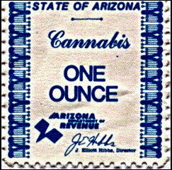
Northwest Phoenix Justice Court
11601 North 19th Avenue
Phoenix, Arizona 85029
Maricopa County
State of Arizona (plaintiff) vs Peter Banker Wilson (defendant)
CASE NO. CR-02094-FE
November 1, 1995
This case having been set for preliminary hearing on September 19, 1995 and the court having found probable cause on count I: possession of marijuana and dismissing count II: possession of drug paraphernalia. It was the order of the court allowing the defense to have an offer of proof hearing pertaining to count I: possession of marijuana.
The offer of proof hearing is set for October 3, 1995. It is now the time set for hearing, and both state and defense counsels’ stipulate to submit defenses’ offer of proof — affidavit of “Peter Banker Wilson” pertaining to the facts of law only; if ruled on favorably to the defense, would rebut any finding of probable cause to believe that the law was violated in a manner that would allow the prosecution to take place.
This case presents the question; whether the prosecution for the possession of marijuana, after the Arizona Department of Revenue sold the defendant a license to sell marijuana and sold numerous one ounce and one gram tax stamps, to be attached to smaller amounts of marijuana, violates the double jeopardy clause of the fifth amendment to the constitution of the United States, applied to the states through the fourteenth amendment.
In this instance the same government authority that legitimized the cannabis license and imposed the cannabis tax stamps also criminalized the activity.
It would appear that either the legislature intended that it would be possible to legally possess marijuana (under Title 42), therefore creating a conflict with Title 13 of the Arizona revised statutes; or the legislature created a punitive tax to directly fund, with 95% of the license and tax revenues, the agencies responsible for the seizure of the cannabis. If the latter is true, then it may be subject to the double jeopardy clause.
Specifically, being punished more than once for the same offense. There is no question that the prosecution is separate from the application and assessment of the license and tax.
In looking to whether the tax was punitive, I had to determine whether the tax and fee has any punitive purpose and if it reimburses the government for its actual costs from criminal conduct. The affidavit presented to the court at the “offer of proof” hearing was stipulated to, and at the preliminary hearing on September 19, 1995, the defense did not raise an issue of fact for the court to determine. Therefore, all that remains is a very unique argument that brings into question the operation of the government. Have the creation of statutes in Title 42 and Title 12, that appear not to be in conflict, created an abuse if not a confusing paradox when applied to the facts in this case? In helping to find guidance in this matter, the court reviewed two cases:
The Department of Revenue of Montana vs. Kurth Ranch, 114 CT. 1937
and
State of Arizona vs. Francisco F. Leyva, 199 Az., Adv. Rep. 18.
This court has concluded that the facts in this case prohibit prosecution for the possession of marijuana, because the tax imposed prior to the prosecution served a punitive purpose.
The offer of proof sufficiently rebutted my finding of probable cause I believe that the defendant committed count I: possession of marijuana.
Therefore it is the order of the court dismissing count I: possession of marijuana.
Judge John R. Barclay
Northwest Phoenix Justice Court
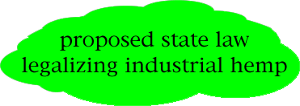
Written by the Hempstead Company, 1534 East Edinger #7, Santa Ana, CA, 92705, 1-800-284-4367, e-mail HEmpTec1@aol.com
California True Hemp and Commerce Act 1995
Public Law 75-238 as amended specifically reserves the right to states to govern the commercial production of true hemp.
LEGISLATIVE COUNSEL’S DIGEST
Bill No.
as introduced,
General Subject: Agriculture: true hemp.
(1) Existing law sets forth various powers and duties of the Department of Food and Agriculture and the Secretary of Food and Agriculture.
This bill would create the California True Hemp and Commerce Act, to be implemented by the secretary, for the purpose of authorizing the production, possession, and commerce of true hemp in this state.
The bill would create the True Hemp Commodity Fund in the State Treasury. Moneys in the fund, when appropriated, would be disbursed for purposes of administering the act.
The bill also would require the secretary to appoint the True Hemp Commodity Marketing Board from nominees submitted by organizations having an interest in this commodity.
An act to add Article 6 (commencing with Section 500) to Chapter 3 of Part 1 of Division 1 of the Food and Agricultural Code, and to add Section 11018.1 to the Health and Safety Code, relating to agriculture.
Because the bill would make it a criminal offense, punishable as specified for any person to violate the provisions of the bill, the bill would impose a state-mandated local program.
Existing provisions of the Health and Safety Code define “marijuana” and set forth provisions prohibiting, among other things, the unauthorized cultivation, harvesting, processing, possession, cultivation, possession for sale, or transportation of marijuana, as specified.
This bill would provide that, except as provided in this bill, all controlled substance laws governing marijuana and marijuana concentrates shall remain in effect, and that this bill shall not be construed to interfere with the enforcement of controlled substances subject to the Uniform Controlled Substance Act.
(2) The California Constitution requires the state to reimburse local agencies and school districts for certain costs mandated by the state. Statutory provisions establish procedures for making that reimbursement.
This bill would provide that no reimbursement is required by this act for a specified reason.
Vote: majority. Appropriation: no. Fiscal committee: yes. State-mandated local program: yes.
THE PEOPLE OF THE STATE OF CALIFORNIA DO ENACT AS FOLLOWS:
SECTION 1. Article 6 (commencing with Section 500) is added to Chapter 3 of Part 1 of Division 1 of the Food and Agricultural Code, to read:
Article 6. California True Hemp and Commerce Act
500. This article shall be known and may be cited as the “California True Hemp and Commerce Act.”
(1) The development and use of true hemp is in the best interest of the state’s economy.
(2) The production and commerce of true hemp and true hemp products should be promoted as a means of economic recovery and expansion of agricultural markets. The Legislature further recognizes that the federal government has made a distinction between marijuana as a drug and industrial true hemp as an agricultural commodity with the adoption of an international treaty entitled “Single Convention on Narcotic Drugs” (Article 28, Sec. 2, 1967), with the exception to stems pursuant to European Economic Community (EEC) Commission Regulation No. 1164/89 dated April 28, 1989, as well as Executive Order 12919 which was signed by the President of the United States on June 3, 1994.
(b) It is the intent of the Legislature, in enacting this article, to do all of the following:
(1) Ensure that all true hemp commodities are regulated in a manner that does not interfere with controlled substance laws in the state.
(2) Promote the public safety and welfare by permitting the development of a state agriculture true hemp industry, while still maintaining the strict control of marijuana.
(3) Provide rural farm communities with an economic and environmental future.
505. As used in this article, unless the context otherwise requires, the following definitions shall apply:
(a) “Agent” means any state law enforcement officer who has been trained as a field inspector of controlled substances.
(b) “Grower” means any person, partnership, limited partnership, association, corporation, including joint ventures, or cooperative that produce true hemp.
(c) “Handler” means any person, partnership, limited partnership, association, or corporation, including joint ventures, or cooperative that receives true hemp for processing into hemp commodities or true hemp products.
(d) “Marijuana” means all parts of the plant cannabis Sativa L or cannabis Indica, whether growing or not, the resin extracted from any part of the plant, and every compound manufacture, salt derivative, mixture, or preparation of the plant or its resins that contains more than 1.2 percent concentration of tetrahydrocannabinols (THC).
(e) “Marijuana concentrate” means hashish, tetrahydrocannabinols, or any alkaloid, salt derivative, preparation, compound, or mixture, whether natural or synthesized, containing more than 1.2 percent concentration of tetrahydrocannabinols.
(f) “Secretary” means the Secretary of Food and Agriculture.
(g) “True hemp” means all parts and varieties of the plant cannabis Sativa L, whether growing or not, that contain less than 1.2 percent concentration of tetrahydrocannabinol (THC) and 1.2 percent of cannabinol (CBD) the precursor to THC in sufficient concentration to equal or exceed the THC content. True hemp is separate and distinct from “marijuana.”
(h) “True hemp products” means all products made from the plant cannabis sativa L including, but not limited to, fiber, seed, oil, cloth, paper, cordage, paints, varnishes, particle board, plastics, or seed for cultivation.
507. Production, possession, and commerce in true hemp is authorized in this state. True hemp shall be classified as an agricultural product and shall be subject to regulation by the secretary under this article in accordance with the “Single Convention on Narcotic Drugs” (Article 28, Sec. 2, 1967), with the exception to stems pursuant to EEC Commission Regulation No. 1164/89 dated April 28, 1989, as well as Executive Order 12919 which was signed by the President of the United States on June 3, 1994.
509. (a) Every person who grows, buys, sells, or receives true hemp within this state shall obtain, on or before February 1 of each year, from the secretary a grower’s or a handler’s license, for each place the person conducts business. A license shall not be transferable and shall expire on January 31 of each year. The license fee shall be in the amount established pursuant to Section 511, and no reduction of the license fee shall be made for a fractional part of the year.
(b) The secretary shall designate and identify sources where a new licensee may obtain true hemp seeds. With the approval of the secretary, licensed growers may retain seeds from each crop to ensure a sufficient supply of seeds for the following year.
(c) After a grower’s license is issued, the secretary shall conduct at least two inspections of the crop annually during its growth phase to determine if there are any violations of this article. The secretary shall take samples of up to a 20-foot by 20-foot cross vertical section of each plot of the total crop for tetrahydrocannabinol (THC) analysis. The average THC content in the crop should be less than five-tenths of 1 percent and individual samples should not exceed 1.2 percent concentration of THC. In all instances, the cannabinol content must equal or exceed the THC content to further insure no psychoactive reactions. Growers who grow any plants where the THC content exceeds 1.2 percent may be prosecuted for violating Section 11358 of the Health and Safety Code.
(d) After a handler’s license is issued, the secretary shall conduct periodic inspections of the handling establishment. The secretary shall take samples of up to one-half of 1 percent of the annual volume of the establishment for THC analysis.
(e) Any plants found to contain more than 1.2 percent concentration of THC shall be confiscated and destroyed. Two concentration violations in one year shall be grounds for license revocation.
511. (a) An application for a grower’s or handler’s license shall state the name of the applicant, the location of the business, and the applicant’s telephone number. In addition, if the applicant is an entity other than a natural person, the application shall state the names of its members or officers, as the case may be.
(b) The annual license fee for growers shall be based on the total acreage to be cultivated. Classes and fees shall be as follows:
(1) Class I. Grower — cultivation up to and including 40 acres, the license fee shall be ___ dollars ($___).
(2) Class II. Grower — cultivation over 40 acres to and including 160 acres, the license fee shall be ___ dollars ($___).
(3) Class III. Grower — cultivation over 160 acres, the license fee shall be ___ dollars ($___).
(c) The annual fee for handlers shall be based on the average tonnage of raw true hemp processed during the previous year, except that this provision shall not apply to a handler who has not been engaged in business during the previous calendar year. The records of quantity processed shall be retained by the handler for a period of two years. Classes and fees shall be as follows:
(1) Class I. Handler — up to and including 100 tons per year, the license fee shall be ___ dollars ($___).
(2) Class II. Handler — over 100 tons to and including 1,000 tons per year, the license fee shall be ___ dollars ($___).
(3) Class III. Handler — over 1,000 tons per year, the license fee shall be ___ dollars ($___).
(d) All license fees shall be deposited in the True Hemp Commodity Fund, which is hereby created in the State Treasury. Moneys in the fund, when appropriated, shall be disbursed for purposes of implementing this article.
513. (a) The True Hemp Commodity Marketing Board is hereby created. The secretary shall appoint the members of the board by February 15, 1996, from nominees submitted by organizations having an interest in this commodity. The board shall meet at least quarterly and is responsible for the preparation of marketing orders, reviewing complaints, and ordering investigations with regard to compliance with this article and other applicable laws. The Attorney General, or his or her designee, may serve as an ex officio member of the board.
(b) The board shall adopt rules and procedures governing the implementation of this article within 45 days of its initial meeting.
(c) The board shall prepare the forms, notices, and reports necessary to carry out this article and shall review the marketing order and level of license fees periodically.
515. (a) Any person who violates this article is guilty of a misdemeanor, punishable by a fine of not more than five hundred dollars ($500).
(b) The secretary, after conducting a hearing, may suspend or revoke any license issued to any grower or handler who violates this article or any rule or regulation issued by the secretary pursuant thereto. If the secretary suspends or revokes a license, the secretary shall notify the district attorney of the county where the violation occurred of the suspension of revocation of the license. The suspension or revocation of a license may be in addition to, or in lieu of, any fines imposed pursuant to subdivision (a).
517. Except for the provisions of this article that authorize, among other things, the production, possession, and commerce of true hemp, all controlled substance laws governing marijuana and marijuana concentrates shall remain in effect. Except as otherwise specified in this article, this article shall not be construed to interfere with the enforcement of controlled substances subject to the Uniform Controlled Substance Act (Division 10 (commencing with Section 11000) of the Health and Safety Code).
SEC. 2. Section 11018.1 is added to the Health and Safety Code, to read:
11018.1 “True hemp” means all parts and varieties of the plant cannabis Sativos whether growing or not that contain less than 1.2 percent concentration of tetrahydrocannabinol (THC) and 1.2 percent of cannabinol (CBD) the precursor to THC in sufficient concentration to equal or exceed the THC content. For purposes of this division, true hemp shall not be considered a controlled substance.
SEC. 3. No reimbursement is required by this act pursuant to Section 6 of Article XIII B of the California Constitution because the only costs that may be incurred by a local agency or school district will be incurred because this act creates a new crime or infraction, eliminates a crime or infraction, or changes the penalty for a crime or infraction, within the meaning of Section 17556 of the Government Code, or changes the definition of a crime within the meaning of Section 6 of Article XIII B of the California Constitution.
Notwithstanding Section 17580 of the Government Code, unless otherwise specified, the provisions of this act shall become operative on the same date that the act takes effect pursuant to the California Constitution.
Woody Harrelson, the actor in the popular NBC television show “Cheers”, as well as several motion pictures, was arrested in Kentucky while working on the behalf of the Constitutional right to grow industrial hemp.
Harrelson, one of the owners of The Hempstead Company of Costa Mesa, CA, was arrested by Sheriff William “Junior” Kilburn in Beattyville, KY, on Saturday, June 1, 1996, for cultivation of “marijuana”.
The actor had been in Kentucky representing industrial hemp and his company, which is the largest hemp clothing company in the U.S., at the Kentucky Industrial Hemp Conference in Lexington, KY, Friday, May 31, with other international hemp industrialists. The conference was sponsored by the Kentucky Hemp Growers Co-op.
In Harrelson’s expert opinion there is a significant difference between the medication “marijuana” and his low-THC hemp seeds, a fiber seed imported from Hungary. He had planted the imported seeds, supplied by his company, to grow industrial hemp on property he had purchased earlier that day.
Just two days prior to his arrest, the motion picture and television actor had explained the difference between marijuana and hemp to Donna Cockrel’s Simpsonville, KY, fifth grade class’s show and tell. The actor emphasized that marijuana is not the same as the hemp cloth used in making the clothing he was wearing.
Humanity has grown industrial hemp for more than 7,000 years.
illustration © Derrick Hare from Velocity; courtesy of 1-800-HEMPMAN
IMPORTANT NOTE: This image may NOT be reused in your own personal web pages. Thank you for honoring the copyrights of the many donors to this CD-ROM.
By Marc Emery
The marijuana & hemp industry, more accurately called the the cannabis industry, is experiencing tremendous expansion worldwide. More and more people all over the globe are using cannabis for recreational, spiritual, industrial, nutritional and medicinal purposes.
Over a hundred million people worldwide ingest cannabis for its consciousness expanding abilities. Hundreds of thousands more are working with hemp in an industrial context, providing millions of people with fabrics, nutrition, oils, paper and now even lumber, plastics, fuel and medicine.
The demand for marijuana & hemp products is tremendous, yet many communities do not have a marijuana & hemp retail outlet. There probably isn’t a hemp store in your community!
This article explains how you can open a complete cannabis store in your community with only $15,000. I have based this article upon my experiences over the past year as proprietor of Hemp BC, and upon my XX years as a store owner and manager. Opening a cannabis shop is the single most effective way to promote the decriminalization of cannabis, and you will be dealing with a receptive and growing market.
A retail outlet is the physical manifestation of the movement’s claim to be able to “save the planet”. The objective of the retail store should be to demonstrate and display every virtuous aspect of cannabis, while also funnelling the money from the cannabis community back into further production within the hemp & marijuana-accessory market.
The retail store is the front line of the cannabis liberation movement, so it should be welcoming, friendly, neat and tidy. Polite but uncompromised. You don’t sell the actual buds — but everything else. The store should be appealing to young and old and everyone in-between.
Everyone who walks out should know more than when they went in, and they should be carrying some products they have paid for! Likely they will, as one in ten adults is a cannabis user, and many more are interested in hemp for industrial and ecological reasons.
Do not open a marijuana only shop (a “head” shop). That is so passe and seventies. Do not contemplate an industrial hemp only store, as you will not make enough money. Consider only a complete cannabis store, catering to the recreational, industrial, medicinal and all other aspects (Food, fuel, fibre, fun!).
You will need a space on a main street in your community. The space should be 500 - 800 square feet. It’s preferable if you can find a location where there is reasonable foot traffic, but as long as you are within two or three blocks of a main pedestrian area that’s OK.
Your store should be on the ground floor. Second floor locations are a definite disadvantage, and I do not recommend them. They’re a pain in the ass for your customers and delivery people, and are very vulnerable to competition. Also, second story locations in Ontario, Quebec and the Prairies get unbearably hot. If you decide to go for a second story location nevertheless, the rent should be no more than a quarter of the price of the same space on the main floor below where you are looking.
You have to be realistic about how much renovation your proposed location needs. Just some paint, you say? Be very realistic. You can probably afford very little for renovations, but your store must be clean, pleasant, and reasonably sharp looking on opening day. It can still be a work in progress, as long as every day sees new improvement. You or friends should do most of the renovations, and I recommend you buy used furnishings to begin with.
Most of your money must go to stock for resale, so you must hold the line on expenditures which do not immediately mean salable inventory. You’ve got to have fast moving merchandise because you will be very pressed to buy more stuff. Emery’s Renovation Law states that all renovations will cost you double plus 10% whatever you had estimated in the first place. Renovations are scary things because the process of repair and improvement reveals further areas that require work. Your rent, inventory, phone lines, taxes, etc can be safely and accurately presumed, but renovation is a great black hole. Serious renovation should be contemplated when you have a decent cash flow, or else are starting out with a much higher budget.
Spend $1,000 on a good sign. You’ll need to order it weeks in advance, but have it delivered after you have been open a week or so. A small overhanging neon sign, at ninety degrees to a flat paint-on-wood sign would be desirable.
A two foot diameter green neon cannabis leaf would attract the right kind of attention for blocks, perhaps with a gold/yellow neon circle around it. Since this clearly indicates the relevant subject matter without words, you don’t have to change your neon overhang if you ever decide to change the name of your store.
By the way, everyone will call your store ‘The Hemp Store’ no matter what you name it.
After you have signed a one or two year lease for your location and paid the first and last month’s rent, decide on what your opening day inventory will be and where you will be getting it from. Then place your order. While you are waiting for your inventory to arrive, you should be working at breakneck speed to get your location operational. It should take no longer than fourteen days from assumption of the location to having a presentable store. Don’t worry if it’s not completely finished, as you will always be making improvements.
Once the front end of your store is mostly finished and decorated, and you have at least $6,000 retail worth of merchandise, open your doors. Work around your customers, work while you are talking to your customers, work while you sell. There will be lulls at first because your phone lines probably won’t be activated for a week or so yet, but you need as much money as you can get. Seize upon any chances to sell, even while your store is a work in progress.
8 hours a day, 7 days a week
You should be open seven days a week, 11 am. to 6:30 pm in winter, to 7 pm in warmer weather. Quickly offer mail order to regulars and people in the region.
By the way, many of your opening day customers may remark that its a nice store, but you need more stock. Just tell them that more is coming. When they return and it’s true, they’ll be impressed that the store is developing into a growing concern.
What if there is already a hemp store in your community? Whether you open in that area depends on answers to these two questions.
#1 Are they doing a good job? If yes, consider another community where there is not yet a marijuana & hemp store. If no, consider if the community can sustain two competing stores.
#2 Could you open near your home but in another market area than the one where a hemp store currently exists?
numbers
One day must be spent getting all the necessary government numbers. You will need to get, in this order:
A GST number, (from Revenue Canada)
An importer Number, (Customs, Canada)
A Sales Tax number (Ministry of Consumer & Corp. Affairs, Province)
A United Parcel Service broker, with United Parcel Service (if you will be bringing in goods from the USA)
A Business License (City Government)
You must conform with zoning regulations, and you will be inspected by Fire Dept. and Health & Safety Depts. If you are not advised of any special exemptions (‘variances’), then your store must conform to the local by-laws governing fire and safety. This means an emergency exit, licensed electrical work, and a licensed professional if renovations involve structural changes or improvement.
If there are ways for you to do only essential repairs with the promise to have others completed by a certain time, the individual in city government will give you slack, if you really do it soon. They don’t want to hassle you, but their job is to make the place up to current safety code. You essentially have to do this if the place was suffering prior to your taking over the location. If you think a location is going to cost more than $3,000 to renovate, consider other options.
starting up
You can do it with $15,000, although $20,000 would be better. It’s great if you have more, but don’t squander it.
With $15,000 to float your store, no more than $4,000 can be allotted for space and start up equipment. This should be divided so that about $1800 goes to paying first and last months rent, and $2200 goes to supplies like paint, lighting, shelves, cashbox, (no cash register until you open) and materials to make display cases.
That’s not much, but it can be done if you get qualified friends to pitch in. Hire a professional in key areas of electricity and signage, although your store shingle doesn’t need to be ready when you open.
You should open the doors with whatever stock you have as soon as your location is presentable to the public. More stuff will arrive, signs will get done, phone and fax installed, but most of this can be done (including pricing and labeling) while you sell to anyone who comes in.
At first you may not have much, but the $11,000 reserved for inventory is enough to make a good store. Your $11,000 cost in material will bring about $19,000 to $21,000 in retail value.
Wait until you are open and showing minimum daily sales of $200 - $250 before beginning to make cosmetic improvements that in and of themselves don’t produce revenue. Neon signs and new cash registers, should be put off until the money is clearly available.
It is unwise to draw any income from the store for at least two months. Every penny should be plowed into more stock, new display cabinets or improvements in the business. Reinvest!
Don’t buy anything unless it can be resold at a profit and reasonably quickly. Don’t buy anything on a whim. Buy it because it will sell!
Work on your bank to give you VISA, Mastercard, and Interac merchant privileges so you can accept credit cards. You must be in business one year to even apply for credit card service from banks. This is a burden for your first year, but plug away at this, particularly if your credit rating is unblemished. Try it after three months, then again at six months.
Now to the opening days inventory. You should have at least $11,000, (really $10,300 plus $721 GST) to spend.
I recommend that you spend $3000 on hemp products, $3000 on books, magazines, and comics relating to marijuana, and about $5000 on smoking devices and accessories.
I also recommend that you purchase all of your inventory (except for rolling papers) from Hemp BC and Still Eagle, but you should always be on the lookout for better deals. Hemp BC will supply all of your marijuana-accessory needs, and Still Eagle is Canada’s largest distributor of hemp textiles and a reliable supplier.
Rolling papers can be obtained from either Forbidden Fruit Products or Philco. Forbidden Fruit is about 20% cheaper, but Philco is a Canadian distributor.
Remember, the cost of your goods is about 60% of your total sale price. This does not include PST & GST, which are on top of your final retail price. For example, if your total cost is $25, (price, duty, and shipping, but not including GST) then your retail price, not including taxes, should be $41.95 to $44.95, possibly even $47.95 or $49.95.
By the way, we buy back at full refund any items bought wholesale at Hemp BC that do not sell in your store. You can cash them in or trade items for what does sell. You would just pay shipping to return them, intact of course. We are confident when we recommend something.
If you buy much of your starting inventory from HEMP BC (as many new stores in Canada do), then you have a fair base price (40% off the suggested retail) for many products. Now you can search for people who might offer material we do not yet carry, or that you can obtain directly at a price preferential to ours.
You must always be thrifty, especially at the beginning. One reason for this is that everyone who sells to you will want cash up front. You are unknown in the industry, so you better have credit cards or ready cash because you will need to send money orders to your suppliers before they will send you the goods. Credit cards, couriered money orders, and direct bank deposits are best because of speed, so that your order will be shipped within 24 hours.
save time, send money
Save time and send your money orders for material over $500 by Federal Express, which is $21 Canadian for overnight service. This shaves 5 - 10 days off your delivery time, as that is how long the mail would take to deliver that money. Any good wholesale company handling a broad range of goods will get your order in transit (likely by United Parcel Service or CANPAR) within 48 hours, and certainly no later than 72 hours.
within BC: 1 or 2 working days.
BC — Alberta: 2 to 3 days.
BC — Saskatchewan & Manitoba: 4 days
BC — Ontario: 5 days
BC — Quebec: 6 or 7 working days
BC to the Maritimes: 8 days.
West Coast USA to BC or Alberta by UPS takes 6 working days from Washington or Oregon to BC takes 5 working days, sometimes 4. Central or Eastern USA to west coast Canada takes 8 to 10 working days East coast USA to Ontario or Quebec is 5 days.
When you import things you will need a ‘broker’ at the border. A broker is the person who fills out B3 Entry Forms (in triplicate), which the Canadian government requires every time and for every different type of commodity you import. B3 entry forms and brokerage Hassles may cause you to seek a Canadian distributor to avoid import duties, brokerage fees, GST and other paperwork. These fees are all factored into the price when you do buy from a Canadian distributor, but it’s very convenient this way.
Although it is certainly self serving to say so, I recommend that every would-be cannabis store owner buy their opening inventory from reliable Canadian suppliers. This is because you’ll get it faster and on-time. If you are inexperienced and your store is opening in two days, you will be quite anxious if there is a problem at the border and your inventory is held up at Customs.
When dealing with any Canadian supplier, insist that no back order be longer than seven days. Ask them to quote what is immediately in stock or will be in stock within no more than seven days.
You don’t want your money out there being held for stuff that will be in stock “soon”. Use that money to buy something saleable from your wholesaler that is in stock now. Have them call you when backordered items are in stock, but pay only for what is going to be shipped out ASAP.
After you deal with these Canadian wholesalers with cash up front for about three or four purchases, they may extend you credit. Basically, most businesses that seem trustworthy will get a $500 - $1,000 credit limit, or the average value of their last three cash up front orders.
This credit will be tremendously helpful. It allows you to receive up to $1,000 worth of goods, and your obligation is to send a cheque for the amount within seven days of the goods arriving at your store. This is equivalent to a 10 - 14 day grace period, and will be a tremendous help at month two or three.
This will also encourage further business with that wholesaler, because usually the wholesaler acts as a revolving banker. Once you pay off the outstanding bill, common custom is to re-order immediately so that your wholesaler is constantly owed about $1,000, but you always pay on time. This will improve your credit and earn you good credit references.
Good references are useful when you apply for seven days net terms with other suppliers, who will ask the key question, “who do you deal with now?”.
Not paying on time is a very limiting factor. At Hemp BC we are reluctant to increase credit or even give any credit to chronic late payers, and credit limits, being arbitrary, can easily be scaled back. Falling more than 30 days behind, or particularly 60 days, will see credit revoked, and (ulp) collection agencies assigned your debt.
This is very bad, because if you do not pay you will show up as a deadbeat at your local credit bureau. This will mean no leases for faxes, photocopiers, equipment, and supply houses, as well as no credit card, and possibly refusal of banking privileges.
Don’t get in too deep! Bad credit injures your credibility and is expensive and difficult to erase. Every one talks to everyone else in this business, and people are always willing to say who is paying promptly and who is not.
On the note of credibility, I have bounced cheques in my time at Hemp BC. You can soothe the anxiety of your debtor by wiring the money to their bank, or Federal Expressing a money order upon being informed of the problem. This rescues the inconvenience and helps to restore trust, but it is a fact than my credibility suffers a little each time because it is a sign of sloppy management — and possibly evidence of a lack of financial control.
Do not underestimate the destructiveness of shoplifters! Unfortunately, marijuana and hemp stores are favorite targets of shoplifters. They will clean you out and devastate your business.
The following items have a high potential for being shoplifted and therefore must be displayed in a secure way, like in a glass cabinet, attached securely to a wall, etc.
1) any and all pipes
2) Hemp wallets and In-Line Hemp Cards
3) marijuana grow guides & small formula books
4) lip balms and tiny cosmetics
5) Female clothing. (this is the favorite of female shoplifters. they can stuff $300+ worth of clothing in one bag!)
Things to put on display that are not popular with shoplifters:
1) hemp soaps
2) hemp books and magazines
3) very large items
4) hemp paper
be suspicious
Keep your eyes peeled. Be suspicious. Ban outright any group of three or more teenage boys (age 12 to 19) from your store if they wear baseball caps or baggy skateboard pants, particularly if they idolize rap musicians. Their lifestyle choice thinks it’s cool to shoplift. You can always tell these types: asking lots of questions, buying nothing, touching and handling everything to distract you while they drop pipes into their pockets.
At the risk of being offensive, you must also beware of drunk people, coke/heroin junkies, skateboarder/rapper teenagers, and anyone who doesn’t buy something from your store. (Why are they there?)
Have a pair of handcuffs ready. If you catch a shoplifter, handcuff them, tie them to a solid object (with handcuffs or hemp rope) and call police. If you are severe and tough with these scumbags, word will get out and you will be left alone. No mercy for shoplifter miscreants!
Police problems can be minimized or eliminated by taking the following actions.
1) Be upfront about all of your activities. A veil of secrecy or an ‘underground’ feel at your store will make your neighbours and police think maybe you are doing something wrong, which is much different than merely illegal.
2) Be polite to police at all times.
3) Make sure you follow all municipal by-laws, and send your sales tax remittance, GST remittance, and all other government paperwork and fees on time.
4) Keep your store uncompromised. Don’t ever have signs saying your products “are for tobacco use” or “we don’t encourage the use of marijuana”. That is totally wussy and hypocritical. If you are that gutless, go into another business. No-one will respect you if you compromise like that.
5) Show away any layabouts who are loitering near your store. This will cause trouble, so be tough early and eliminate any potential problems before they occur.
6) Be a good spokesperson in the media. Media exposure is protection against police action. If the community likes you and is supportive, the actions of the police will reflect that. They talk to folks too, and they’ll find out if the community likes you or not.
Police actions are based upon whether what they do enjoys community support. Responsible, uncompromising behaviour on your part encourages both good sales and good public relations.
smoke & seeds
Do not permit the smoking of marijuana in your store for the first few months. Then you can test the waters.
I also recommend that you don’t sell viable marijuana seeds at first. Get hemp seed treats, Hemprella, and a barrel of bulk hemp seeds, which will look interesting and sell like a bulk food item.
After six months or so, introduce a few varieties of viable marijuana seeds, and see if anything happens. Remember, any legal problems are potential publicity bonanzas.
If the police do approach you, it may be to intimidate you into not handling something (most likely High Times, Cannabis Canada, or maybe pipes). Refuse to be intimidated and call Hemp BC for advice. If you do have legal problems, or police bust you, then you must be prepared for a legal battle. This will produce excellent media exposure, publicity, and increased sales.
A principled defence of the rights of cannabis Canadians will endear you to your customers and increase sales significantly. This should be more than enough to offset losses if police seize $1,000 - $3,000 in merchandise.
Of course you will restock and continue. The crown will lose in court and you will likely see your material returned. Hemp BC and Cannabis Canada will help you with your legal battle, in fundraising and media.
You will not need to pay to advertise, except for Cannabis Canada and any other widely distributed cannabis culture media in your area. A quarter page advertisement soliciting manufacturers and distributors to send you their catalog or contact you is a good way to keep your costs down and stay on top of the new products available.
Your novelty value and huge potential audience will quickly make you news in your community. Media will come to you for the scoop on the new marijuana and hemp store in their community.
Let’s face it, there has never been one before, and all your cool stuff and the amazing variety of things related to hemp will make you popular with tourists, hempsters, smokers, and environmentalists. You will draw people, and your business neighbours will like that very much.
When BCTV did a TV news story on HEMP BC, they went to all the neighbours for blocks around to find someone who objected to our business. They told us they couldn’t find a single one, because we drew many people to nearby restaurants, record stores and other businesses.
Make sure you quickly get involved in the marijuana legalization and industrial hemp movements. They are slightly different strands of the same thread. This will lend you credibility and should really be why you have chosen to open a hemp store in the first place.
Approach environmental organizations and donate hemp stationery. Point out the many potential jobs in the marijuana & hemp industry if it were legalized. Point out the eco-friendly aspects of hemp
If possible, announce your business on the internet. Solicit catalogs from suppliers there, sell goods there, and network with others in the industry on usenet.alt.hemp and in the World Wide Web. This is a very fast growing area, but keep your expenditures very modest.
Depending on your location and circumstances, you will reach a daily average of $200 in sales by day ten, $300 a day by day 50, and possibly $500 - $1,000 a day by the end of your first year.
It will help dramatically if you do a good job promoting cannabis in the media, put ads in Cannabis Canada, and offer your regulars mail-order service.
Get a booth at Lollapalooza, Another Roadside Attraction, and whatever big tourist draws and fairs go on in your community.
After a little while, make a brochure (on hemp paper, of course) describing what your store is all about. Give it out to customers, or to interested people at those fairs. Remember to emphasize that you’ll do mail order!
Best sales times are July, August, and December. Christmas sales are spectacular in the marijuana and hemp trade! Have lots of good stuff on hand for between December 8 to 24, because you will sell it all!
Good luck!
Good luck on your business plans. For any individual concerns, Marc Emery will try to help you with any specifics. Call 1-800-330-HEMP to discuss your problems with Marc.
The preceeding article provided courtesy of Dana Larsen (muggles@hempbc.com), Editor, Cannabis Canada, “The Magazine of Canada’s Cannabis Culture”
Visit Cannabis Canada online athttp://www.hempbc.com
Subscribe to Cannabis Canada! Call 1-800-330-HEMP for more info
Join the Cannabis Canada News and Information Email List!
Send an email to cclist@hempbc.com with a subject of “subscribe”
You have reached the end. Turn back before you go too far....
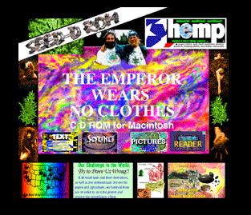
the authorized on-line version of Jack Herer’s “The Emperor Wears No Clothes”
|
 |
 |
 |
 |